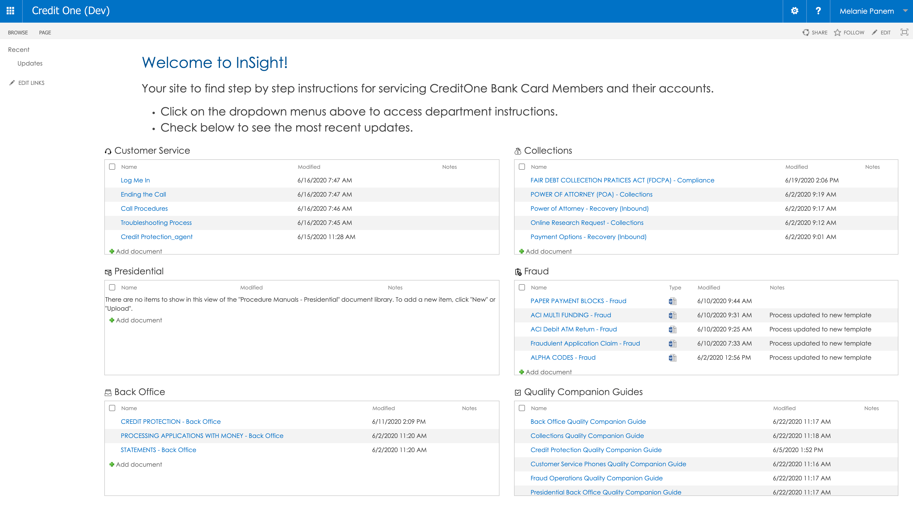
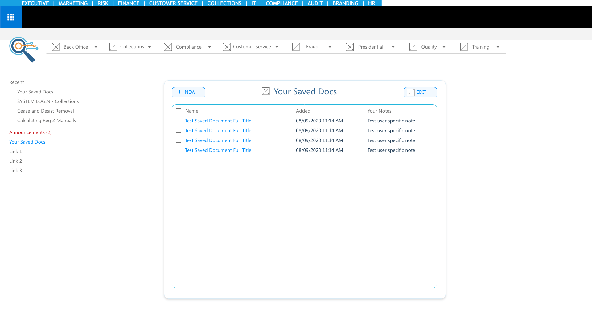
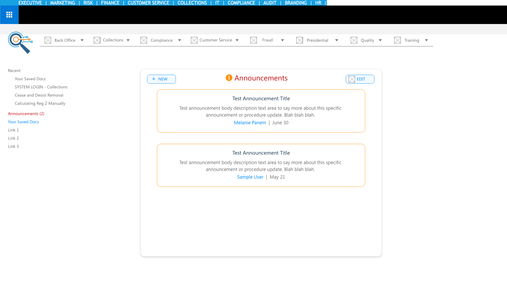

← back
SHAREPOINT INSIGHT
INTRODUCTION
SharePoint InSight is a central location that Credit One Bank customer service, fraud, collections, and other customer-facing departments at the bank can use to access their procedure manuals and new process updates.
TOOLS USED
-
 SharePoint 2016
SharePoint 2016
-
 Adobe
XD
Adobe
XD
-
 Sublime
Sublime
ROLES
I led the user interviews as well as the user interface design and development. I also created team documentation in Atlassian Confluence for the project, as well as how-to instructions for basic SharePoint tasks such as editing page CSS or attaching an external JavaScript file.
The two other members of the team were in charge of setting up communications with the stakeholders and creating the visual graphics (e.g. s). We all collaborated on interpreting the data that we gathered from interviews to determine the new interface requirements and features needed.
GOALS
BEFORE
NEW FEATURES
USER SAVED DOCS
The logged in user can save document links in a custom list that is available to only them.
ANNOUNCEMENTS
This is an area that administrators can post public updates or information that all users need to know about.
PROCESS
CONCLUSIONS
I really enjoy taking on projects like this where I'm able to have a role in every part of the final product process. From the data gathering to the more abstract-refining implementation, this project was not only a great learning experience, but also had a different set of responsibilities from what I usually do in my Web Development Specialist position at Credit One. And although the new user interface and logo design wasn't ultimately used here, we are going to be able to re-apply them in a new way on the SharePoint 365 platform.